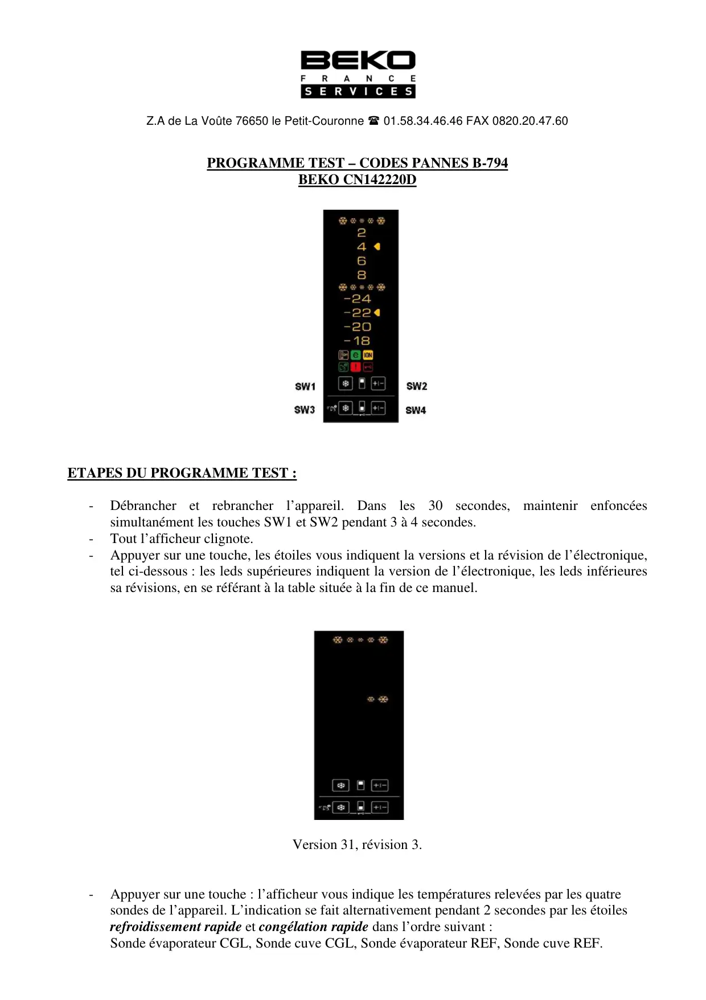
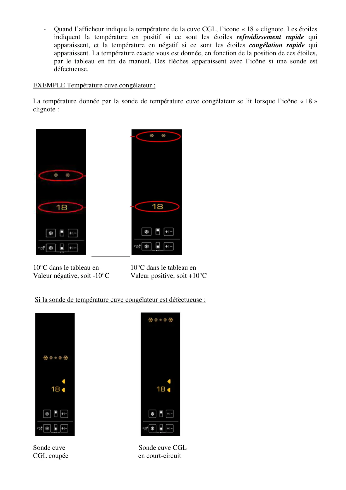
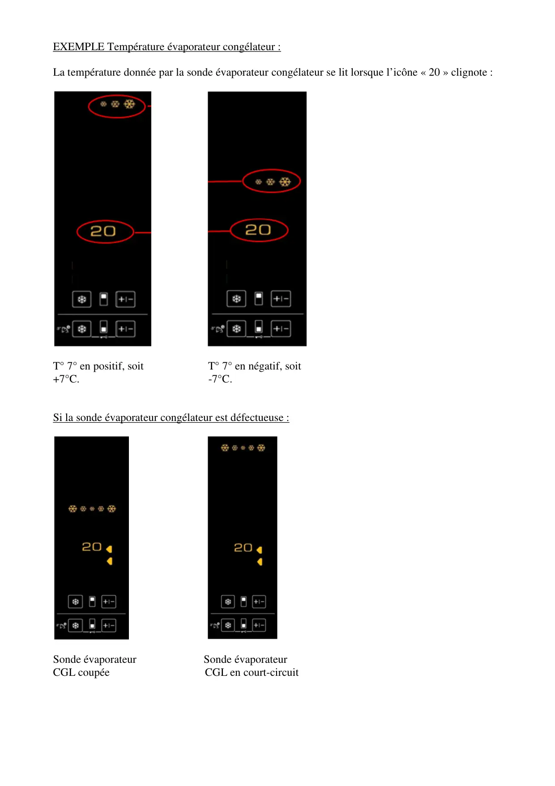
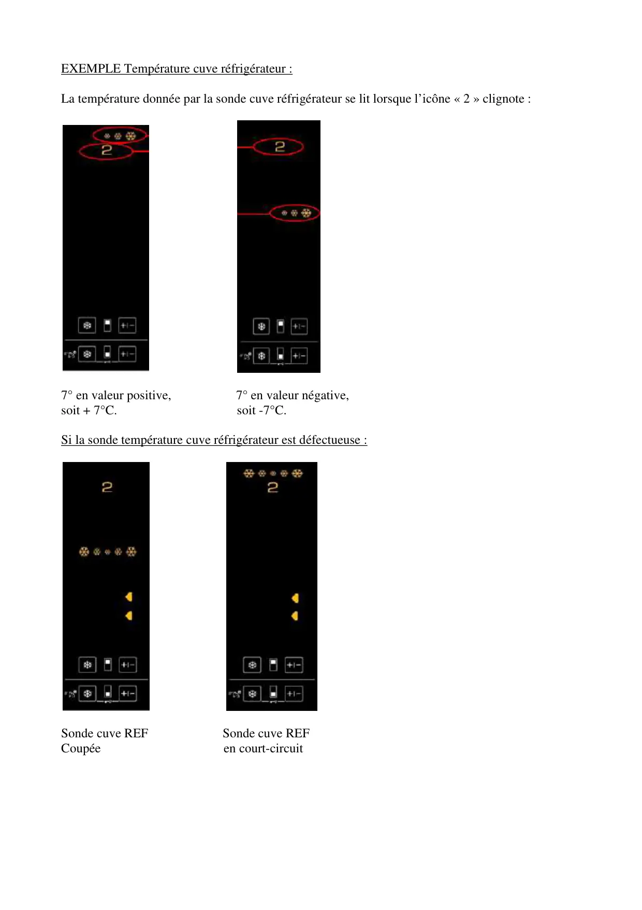
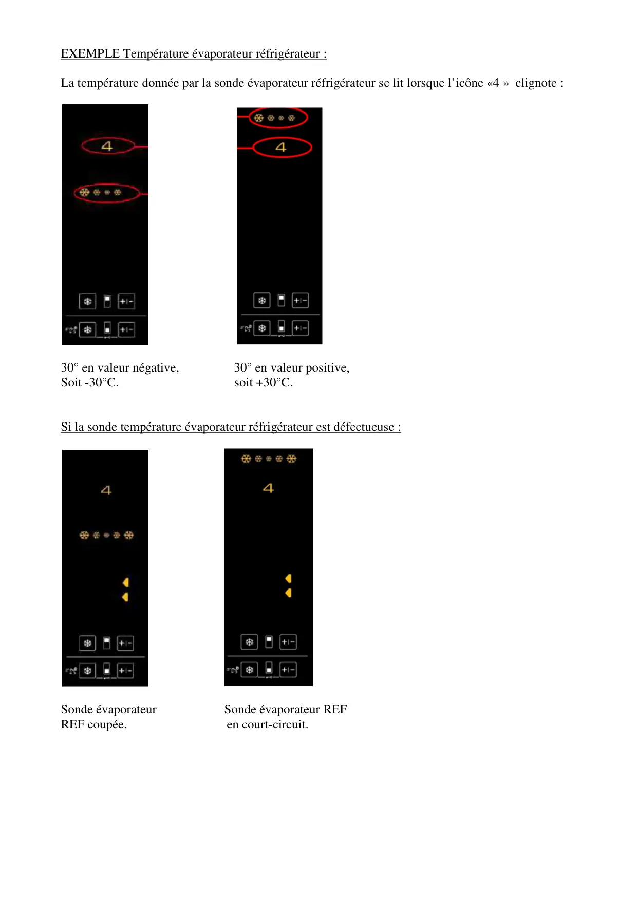
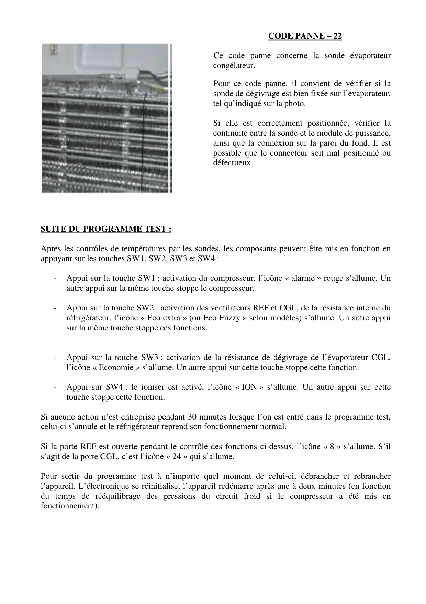
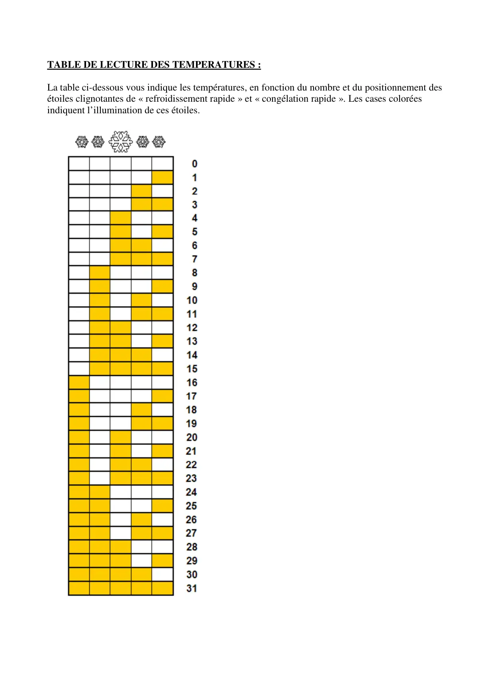

ProgrTest CN142220 B794 V2

Z.A de La Voûte 76650 le Petit-Couronne 01.58.34.46.46 FAX 0820.20.47.60PROGRAMME TEST – CODES PANNES B-794BEKO CN142220DETAPES DU PROGRAMME TEST :-Débrancher et rebrancher l’appareil. Dans les 30 secondes, maintenir enfoncéessimultanément les touches SW1 et SW2 pendant 3 à 4 secondes.-Tout l’afficheur clignote.-Appuyer sur une touche, les étoiles vous indiquent la versions et la révision de l’électronique,tel ci-dessous : les leds supérieures indiquent la version de l’électronique, les leds inférieuressa révisions, en se référant à la table située à la fin de ce manuel.Version 31, révision 3.-Appuyer sur une touche : l’afficheur vous indique les températures relevées par les quatresondes de l’appareil. L’indication se fait alternativement pendant 2 secondes par les étoilesrefroidissement rapide et congélation rapide dans l’ordre suivant :Sonde évaporateur CGL, Sonde cuve CGL, Sonde évaporateur REF, Sonde cuve REF.
1 / 7
-Quand l’afficheur indique la température de la cuve CGL, l’icone « 18 » clignote. Les étoilesindiquent la température en positif si ce sont les étoiles refroidissement rapide quiapparaissent, et la température en négatif si ce sont les étoiles congélation rapide quiapparaissent. La température exacte vous est donnée, en fonction de la position de ces étoiles,par le tableau en fin de manuel. Des flèches apparaissent avec l’icône si une sonde estdéfectueuse.EXEMPLE Température cuve congélateur :La température donnée par la sonde de température cuve congélateur se lit lorsque l’icône « 18 »clignote :10°C dans le tableau en 10°C dans le tableau enValeur négative, soit -10°C Valeur positive, soit +10°CSi la sonde de température cuve congélateur est défectueuse :Sonde cuve Sonde cuve CGLCGL coupée en court-circuit
2 / 7
EXEMPLE Température évaporateur congélateur :La température donnée par la sonde évaporateur congélateur se lit lorsque l’icône « 20 » clignote :T° 7° en positif, soit T° 7° en négatif, soit+7°C. -7°C.Si la sonde évaporateur congélateur est défectueuse :Sonde évaporateur Sonde évaporateurCGL coupée CGL en court-circuit
3 / 7
EXEMPLE Température cuve réfrigérateur :La température donnée par la sonde cuve réfrigérateur se lit lorsque l’icône « 2 » clignote :7° en valeur positive, 7° en valeur négative,soit + 7°C. soit -7°C.Si la sonde température cuve réfrigérateur est défectueuse :Sonde cuve REF Sonde cuve REFCoupée en court-circuit
4 / 7
EXEMPLE Température évaporateur réfrigérateur :La température donnée par la sonde évaporateur réfrigérateur se lit lorsque l’icône «4 » clignote :30° en valeur négative, 30° en valeur positive,Soit -30°C. soit +30°C.Si la sonde température évaporateur réfrigérateur est défectueuse :Sonde évaporateur Sonde évaporateur REFREF coupée. en court-circuit.
5 / 7
CODE PANNE – 22Ce code panne concerne la sonde évaporateurcongélateur.Pour ce code panne, il convient de vérifier si lasonde de dégivrage est bien fixée sur l’évaporateur,tel qu’indiqué sur la photo.Si elle est correctement positionnée, vérifier lacontinuité entre la sonde et le module de puissance,ainsi que la connexion sur la paroi du fond. Il estpossible que le connecteur soit mal positionné oudéfectueux.SUITE DU PROGRAMME TEST :Après les contrôles de températures par les sondes, les composants peuvent être mis en fonction enappuyant sur les touches SW1, SW2, SW3 et SW4 :-Appui sur la touche SW1 : activation du compresseur, l’icône « alarme » rouge s’allume. Unautre appui sur la même touche stoppe le compresseur.-Appui sur la touche SW2 : activation des ventilateurs REF et CGL, de la résistance interne duréfrigérateur, l’icône « Eco extra » (ou Eco Fuzzy » selon modèles) s’allume. Un autre appuisur la même touche stoppe ces fonctions.-Appui sur la touche SW3 : activation de la résistance de dégivrage de l’évaporateur CGL,l’icône « Economie » s’allume. Un autre appui sur cette touche stoppe cette fonction.-Appui sur SW4 : le ioniser est activé, l’icône « ION » s’allume. Un autre appui sur cettetouche stoppe cette fonction.Si aucune action n’est entreprise pendant 30 minutes lorsque l’on est entré dans le programme test,celui-ci s’annule et le réfrigérateur reprend son fonctionnement normal.Si la porte REF est ouverte pendant le contrôle des fonctions ci-dessus, l’icône « 8 » s’allume. S’ils’agit de la porte CGL, c’est l’icône « 24 » qui s’allume.Pour sortir du programme test à n’importe quel moment de celui-ci, débrancher et rebrancherl’appareil. L’électronique se réinitialise, l’appareil redémarre après une à deux minutes (en fonctiondu temps de rééquilibrage des pressions du circuit froid si le compresseur a été mis enfonctionnement).
6 / 7
TABLE DE LECTURE DES TEMPERATURES :La table ci-dessous vous indique les températures, en fonction du nombre et du positionnement desétoiles clignotantes de « refroidissement rapide » et « congélation rapide ». Les cases coloréesindiquent l’illumination de ces étoiles.
7 / 7